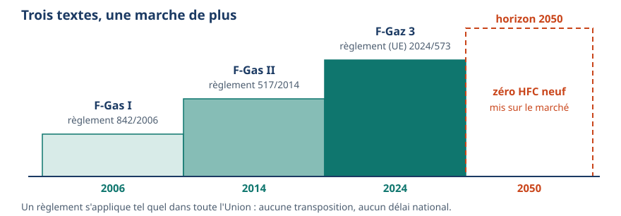
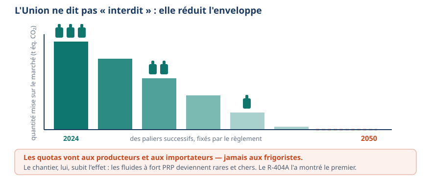
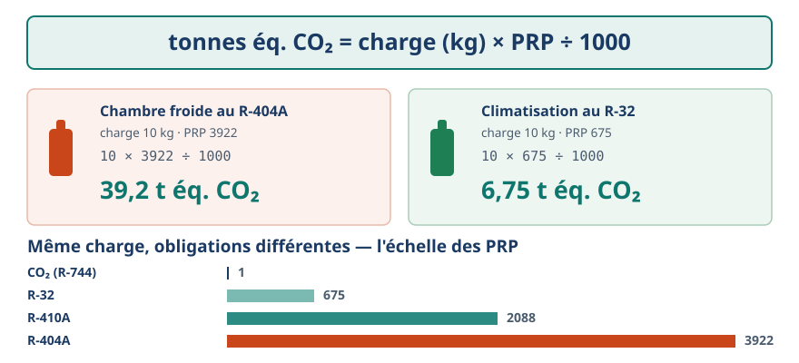
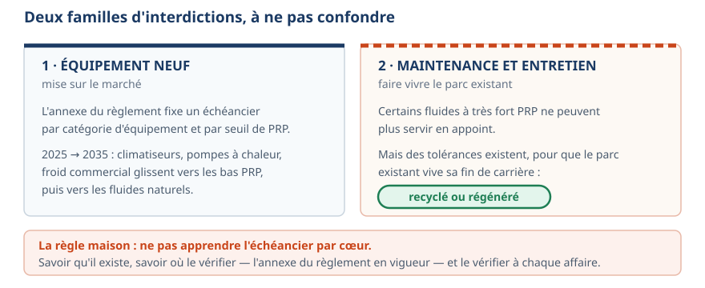
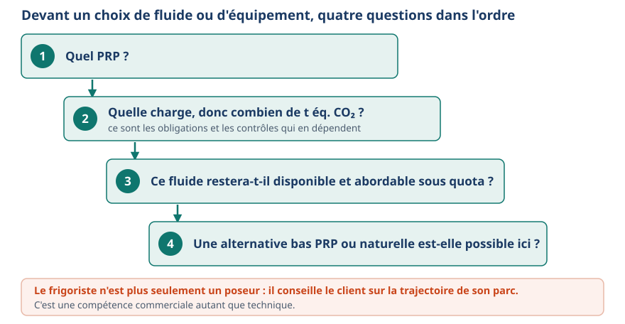

Fluidique & thermique · niveau BTS
F-Gaz 3 — le règlement (UE) 2024/573
Mini-station · 8 écrans et 4 questions · environ 10 minutes
À la fin de la station, vous savez situer le règlement (UE) 2024/573 dans la lignée F-Gas, expliquer le mécanisme des quotas, convertir une charge en tonnes équivalent CO₂, et dérouler le raisonnement d'un technicien devant un choix de fluide ou d'équipement.
Écran 1 sur 8
Trois textes, une marche de plus
La réglementation européenne des gaz fluorés avance par générations : F-Gas I (règlement 842/2006), F-Gas II (517/2014), et depuis mars 2024 F-Gaz 3 : le règlement (UE) 2024/573. C'est un règlement, pas une directive : il s'applique tel quel dans toute l'Union, sans transposition.
Côté français, l'arrêté du 21 novembre 2025 organise le terrain : attestations, contrôles. Chaque génération serre d'un cran — F-Gaz 3 va jusqu'à programmer la sortie complète des HFC neufs à l'horizon 2050.

Écran 2 sur 8
Le mécanisme central : le phase-down
L'Union ne dit pas « interdit du jour au lendemain » : elle réduit l'enveloppe. Chaque année, une quantité maximale de HFC peut être mise sur le marché, comptée en tonnes équivalent CO₂, et répartie en quotas entre producteurs et importateurs — pas entre les frigoristes. L'enveloppe rétrécit par paliers jusqu'à zéro HFC neuf en 2050.
Conséquence directe en chantier : les fluides à fort PRP deviennent rares et chers — le R-404A l'a montré le premier. Le marché pousse tout seul vers les bas PRP.

Écran 3 sur 8
La conversion qui pilote tout
tonnes éq. CO₂ = charge (kg) × PRP ÷ 1000
Deux installations de même charge n'ont pas les mêmes obligations si les fluides diffèrent :
| Installation | Charge | PRP | t éq. CO₂ |
|---|---|---|---|
| Chambre froide au R-404A | 10 kg | 3922 | 39,2 |
| Climatisation au R-32 | 10 kg | 675 | 6,75 |
C'est cette valeur — jamais le poids seul — qui déclenche les obligations.

Écran 4 sur 8
Les interdictions : neuf d'abord, maintenance ensuite
Deux familles d'interdictions, à ne pas confondre :
- Mise sur le marché d'équipements neufs : l'annexe du règlement fixe un échéancier par catégorie d'équipement et par seuil de PRP. De 2025 à 2035, climatiseurs, pompes à chaleur et froid commercial glissent vers les bas PRP, puis vers les fluides naturels.
- Maintenance et entretien : certains fluides à très fort PRP ne peuvent plus servir en appoint — avec des tolérances pour le fluide recyclé ou régénéré, afin que le parc existant vive sa fin de carrière.
Ne pas apprendre l'échéancier par cœur. Savoir qu'il existe, savoir où le vérifier — l'annexe du règlement en vigueur — et vérifier à chaque affaire.

Écran 5 sur 8
Ce qui se durcit sans changer de nature
Les obligations héritées de F-Gas II demeurent, resserrées :
Contrôles d'étanchéité
Périodiques, déclenchés par seuils en t éq. CO₂ (5 / 50 / 500). Plus l'installation « pèse » en équivalent CO₂, plus les contrôles sont fréquents ; au-delà du seuil haut, détection automatique.
Récupération obligatoire
Du fluide, avant toute mise au rebut. La filière DEEE traite la carcasse, jamais le fluide.
Registre d'équipement
Tenu par l'exploitant : chaque charge, chaque contrôle, chaque fuite y laisse une trace.
Le registre est la porte d'entrée de la station Traçabilité : le fluide récupéré devient un déchet tracé.
Écran 6 sur 8
Qui a le droit de toucher
Deux papiers, deux titulaires : l'attestation d'aptitude (la personne) et l'attestation de capacité (l'entreprise). L'arrêté du 21 novembre 2025 redessine les catégories d'aptitude — A1, A2, B, C, D, E, auxquelles s'ajoute la catégorie V pour la climatisation des véhicules, qui relève d'un référentiel distinct.
Ce redécoupage suit le règlement, qui pousse vers les alternatives : le CO₂ (catégorie B) et l'ammoniac (catégorie C) entrent dans le champ de la formation. Un technicien qui n'évolue pas reste au bord du marché.

Écran 7 sur 8
Le raisonnement du technicien
Devant un choix de fluide ou d'équipement, quatre questions, dans l'ordre :
- Quel PRP ?
- Quelle charge — donc combien de t éq. CO₂ ? Ce sont les obligations et les contrôles qui en dépendent.
- Ce fluide restera-t-il disponible et abordable sous quota ?
- Une alternative bas PRP ou naturelle est-elle possible ici ?
Le frigoriste de 2026 n'est plus seulement un poseur : il conseille le client sur la trajectoire de son parc. C'est une compétence commerciale autant que technique.

Écran 8 sur 8
Bilan et le réflexe
- F-Gaz 3 = règlement (UE) 2024/573, troisième génération, cap 2050.
- Phase-down = enveloppe en t éq. CO₂ qui rétrécit, quotas aux producteurs et importateurs.
- t éq. CO₂ = charge × PRP ÷ 1000 : la valeur qui déclenche tout.
- Interdictions « neuf » ≠ restrictions « maintenance » (recyclé ou régénéré).
Le texte en vigueur fait foi — jamais la fiche d'il y a deux ans.
Les 4 questions
1. Le règlement (UE) 2024/573 est entré en application en mars 2024. Que remplace-t-il ?
- La directive européenne sur les gaz fluorés
- Le règlement 517/2014, dit F-Gas II
- Le protocole de Montréal
- L'arrêté du 21 novembre 2025
Voir la réponse
b) Le règlement 517/2014, dit F-Gas II
La lignée est 842/2006 → 517/2014 → 2024/573. Montréal vise l'ozone (CFC et HCFC), et l'arrêté français applique le règlement : il ne le précède pas.
2. Les quotas du phase-down sont attribués :
- Aux producteurs et importateurs de HFC
- À chaque entreprise d'installation frigorifique
- À chaque État membre, qui les répartit
- Aux exploitants des installations
Voir la réponse
a) Aux producteurs et importateurs de HFC
Le quota se joue à la mise sur le marché. Le frigoriste, lui, subit l'effet : rareté et prix des fluides à fort PRP.
3. Une installation contient 8 kg de R-410A (PRP 2088). Sa charge en tonnes équivalent CO₂ vaut environ :
- 1,7 t éq. CO₂
- 8 t éq. CO₂
- 16,7 t éq. CO₂
- 167 t éq. CO₂
Voir la réponse
c) 16,7 t éq. CO₂
8 × 2088 ÷ 1000 = 16,7. C'est cette valeur qui déclenche les obligations de contrôle d'étanchéité, pas les 8 kg.
4. Un fluide dont la mise sur le marché est interdite en équipement neuf :
- Ne peut plus jamais être utilisé, même en maintenance
- Peut, selon l'échéancier, encore servir en maintenance — notamment recyclé ou régénéré
- Doit être détruit immédiatement dans toutes les installations
- Reste autorisé en neuf si le client signe une décharge
Voir la réponse
b) Peut, selon l'échéancier, encore servir en maintenance — notamment recyclé ou régénéré
L'interdiction « neuf » et les restrictions « maintenance » sont deux régimes distincts ; le recyclé ou régénéré accompagne la fin de carrière du parc. Détruire tout le parc du jour au lendemain n'est ni demandé ni possible.
Les correspondances de la station
- Aptitude & capacité (même sous-ligne) — qui a le droit de toucher.
- PRP & ODP (Impact environnemental) — d'où vient le chiffre PRP.
- Traçabilité (même sous-ligne) — le fluide récupéré devient déchet tracé.
Les stations correspondantes ne sont pas encore ouvertes : elles sont en préparation sur le plan du réseau.